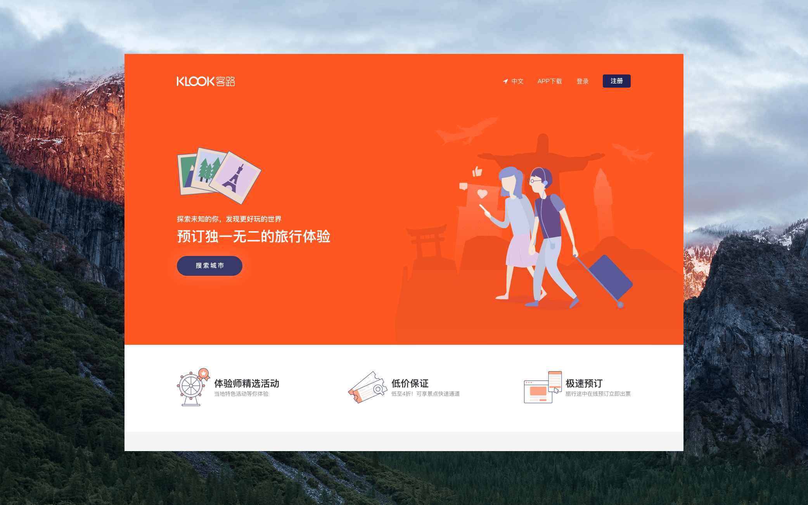
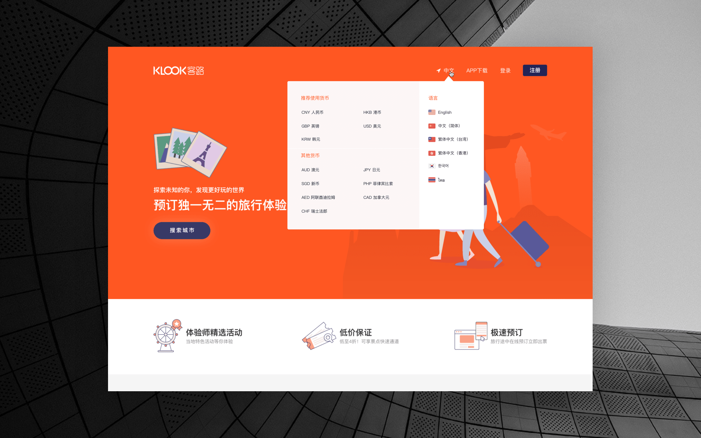
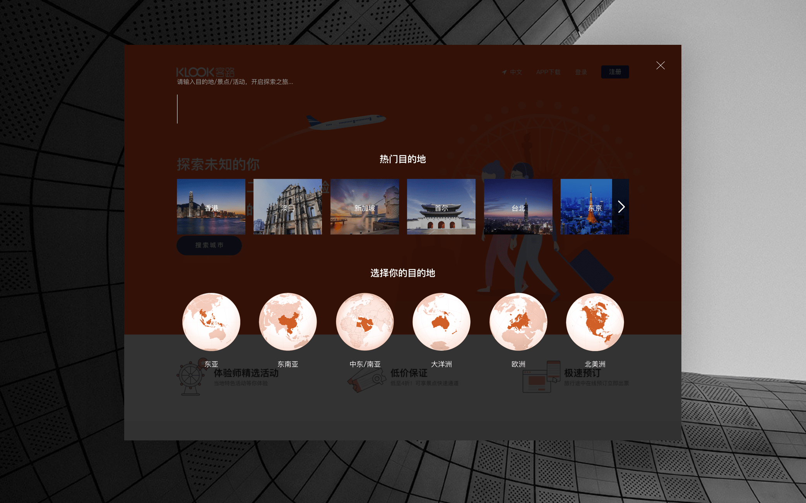
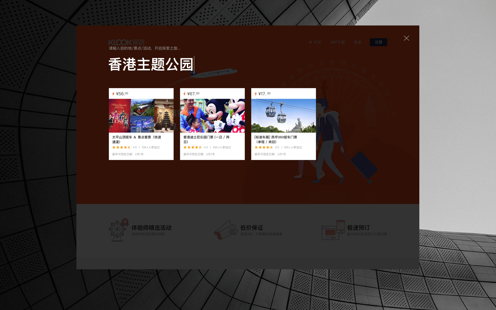
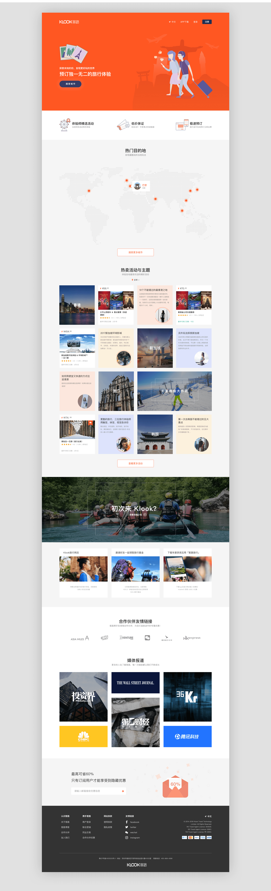
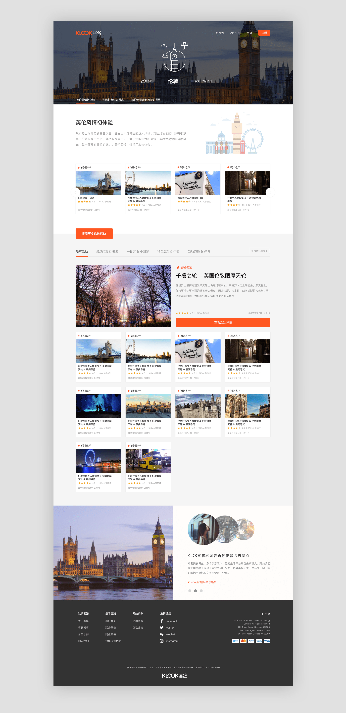
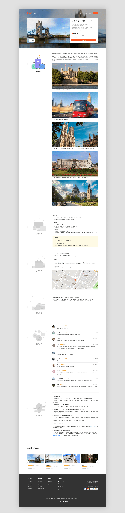
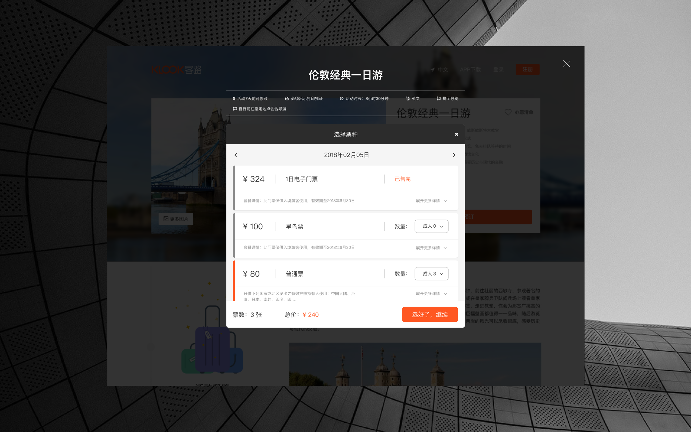
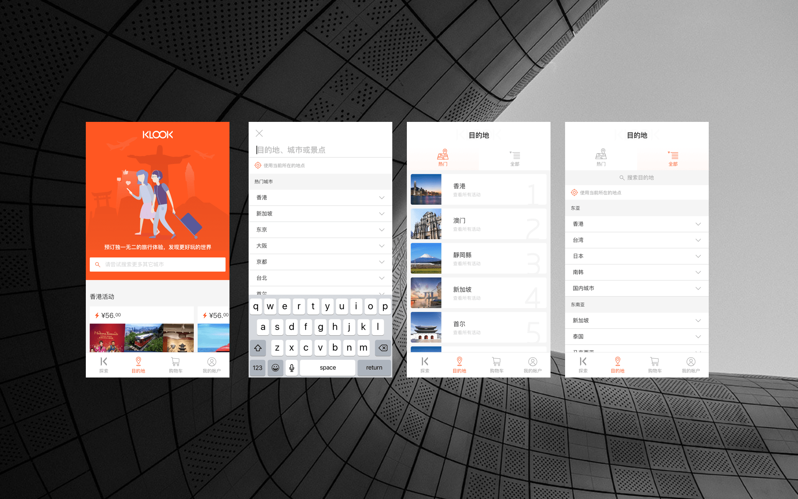
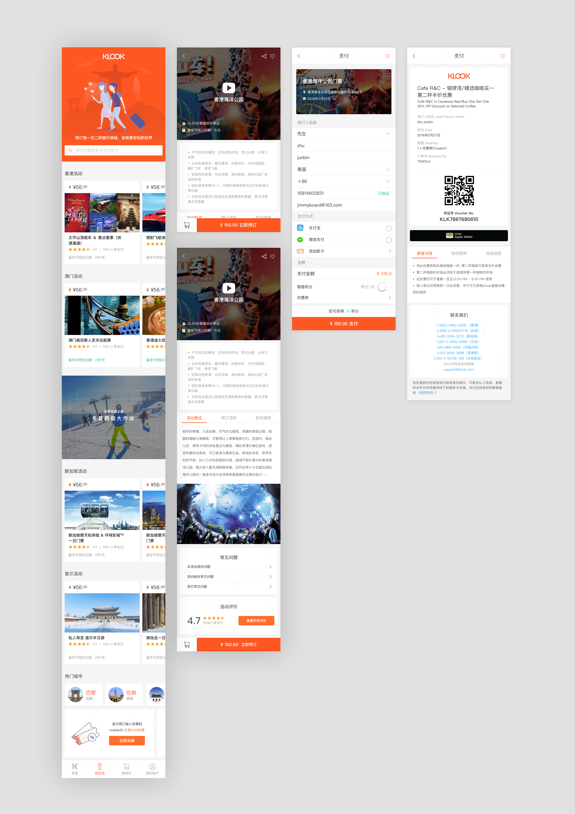

以下是我用了100个小时做的Klook旅行再设计（Redesign）。首先介绍一下自己的想法，生活中的我是一位客路旅行真实的使用用户，客路旅行获得过App Store年度精选应用，对于现有的网站和APP的用户体验我都觉得非常的舒服。正因为这个原因，整个Redesign对我来说，主要是想从个人偏好上对于客路旅行去进行Redesign，怎么样使它对我来说变得更加的有趣？如果这个产品是做给自己去使用的话，我希望它会是怎么样的？对于大多数旅游类的产品来说，通过漂亮的图片去获得用户的吸引力有许多的优点，用户坐在电脑桌前能够真实的体验到自己希望前往目的地的样子。但这同时也是大多数用户感觉这类产品都逐渐趋同的原因，我希望通过加入自己绘制的插图使整个产品在视觉上更佳的独特。而且插图元素能够使一些文字的说明更佳的丰富，在遇到复杂使用说明的情况下，插图也能够做出很好的解释。









